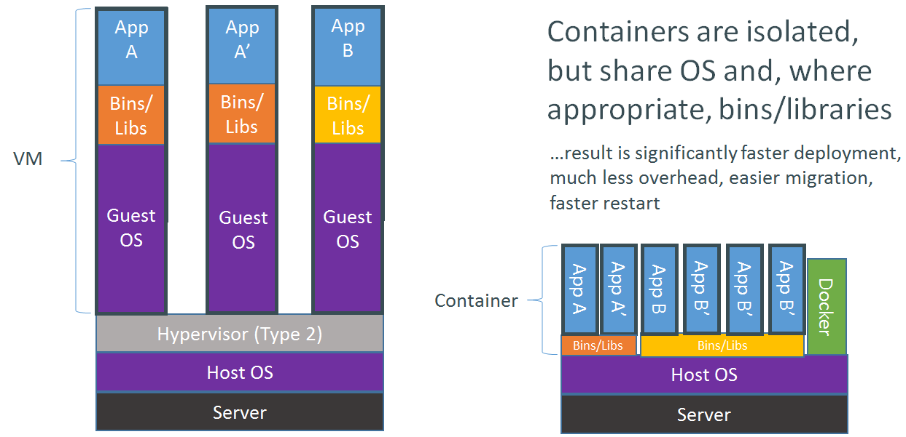
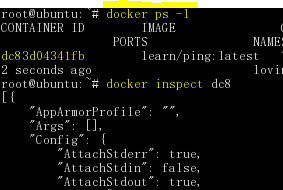
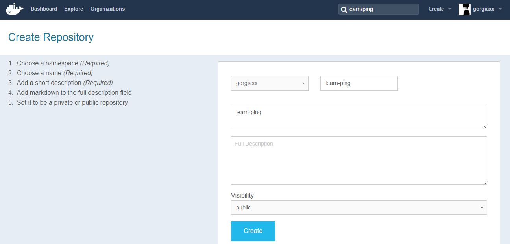
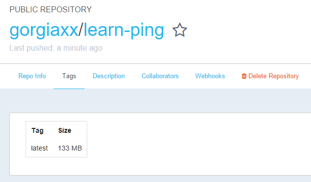

完全是被这个鲸鱼logo吸引的，初次看到这个logo就喜欢上了。
Docker是一个开源的引擎，可以轻松的为任何应用创建一个轻量级的、可移植的、自给自足的容器。开发者在笔记本上编译测试通过的容器可以批量地在生产环境中部署，包括VMs（虚拟机）、bare metal、OpenStack 集群和其他的基础应用平台。
Docker container和普通的虚拟机Image相比, 最大的区别是它并不包含操作系统内核.

Docker通常用于如下场景：
- web应用的自动化打包和发布；
- 自动化测试和持续集成、发布；
- 在服务型环境中部署和调整数据库或其他的后台应用；
- 从头编译或者扩展现有的OpenShift或Cloud Foundry平台来搭建自己的PaaS环境。
Linux版本：ubuntu-15.04-server-amd64
环境：VMware Workstation 11
下载安装docker
1
| apt-get install docker.io
|
查看docker版本
1 2 3 4 5 6 7 8 9 10 11 12 13 14 15 16 17 18 19 20 21 22 23 24 25 26 27 28
| root@ubuntu:~ Client version: 1.6.2 Client API version: 1.18 Go version (client): go1.3.3 Git commit (client): 7c8fca2 OS/Arch (client): linux/amd64 Server version: 1.6.2 Server API version: 1.18 Go version (server): go1.3.3 Git commit (server): 7c8fca2 OS/Arch (server): linux/amd64 root@ubuntu:~ Containers: 13 Images: 3 Storage Driver: aufs Root Dir: /var/lib/docker/aufs Backing Filesystem: extfs Dirs: 29 Dirperm1 Supported: true Execution Driver: native-0.2 Kernel Version: 3.19.0-15-generic Operating System: Ubuntu 15.04 CPUs: 2 Total Memory: 1.938 GiB Name: ubuntu ID: 5P2D:CFMQ:5WWP:U7RE:3SLE:Z2D3:L7D3:UMCI:LHZD:WNQK:Q6DD:ZRPA WARNING: No swap limit support
|
搜索可用的docker镜像
这里用工具检索名字为tutorial的镜像
1 2 3
| root@ubuntu:~ NAME DESCRIPTION STARS OFFICIAL AUTOMATED learn/tutorial 11
|
下载容器镜像
1 2 3 4 5 6
| root@ubuntu:~ NAME DESCRIPTION STARS OFFICIAL AUTOMATED learn/tutorial 11 root@ubuntu:~ Pulling repository learn/tutorial 8dbd9e392a96: Download complete Status: Downloaded newer image for learn/tutorial:latest
|
来一个hello gorigas!
1 2
| root@ubuntu:~ hello gorgias
|
在容器中安装新的程序
1
| docker run learn/tutorial apt-get install -y ping
|
在执行apt-get 命令的时候，要带上-y参数。如果不指定-y参数的话，apt-get命令会进入交互模式，需要用户输入命令来进行确认，但在docker环境中是无法响应这种交互的。
保存对容器的修改
当你对某一个容器做了修改之后（通过在容器中运行某一个命令），可以把对容器的修改保存下来，这样下次可以从保存后的最新状态运行该容器。docker中保存状态的过程称之为committing，它保存的新旧状态之间的区别，从而产生一个新的版本。
首先使用docker ps -l命令获得安装完ping命令之后容器的id。然后把这个镜像保存为learn/ping。
1 2 3 4 5 6
| root@ubuntu:~ CONTAINER ID IMAGE COMMAND CREATED STATUS PORTS NAMES 824490fb9db6 learn/tutorial:latest "ping 192.168.1.1" About a minute ago //只需取到能用于区分的量就行了，这里是824 suspicious_yalow root@ubuntu:~ ae5aa76cc0f84a7a3ebb77e8c7557df0d89564dd5cb9830cb4d35424290a71ca //返回的版本号
|
运行新的镜像
一定要使用新的镜像名learn/ping来运行ping命令。(译者按：最开始下载的learn/tutorial镜像中是没有ping命令的)
1 2 3 4 5
| PING www.a.shifen.com (115.239.210.27) 56(84) bytes of data. 64 bytes from 115.239.210.27: icmp_req=1 ttl=53 time=23.7 ms 64 bytes from 115.239.210.27: icmp_req=2 ttl=53 time=23.2 ms 64 bytes from 115.239.210.27: icmp_req=3 ttl=53 time=23.4 ms
|
停止运行中的镜像
1 2
| docker stop id //优♂雅地停止镜像 docker kill id //强行停止镜像
|
检查运行中的镜像
先使用docker ps查看镜像，然后再用这条命令
1
| docker inspect dc8 //这里dc8是镜像id的前三位
|

发布自己的镜像
先在Docker Hub注册一个账号
创建一个自己的仓库

push之前也可以先登录
这里尝试把learn/ping发布到docker的index网站。你只能将镜像发布到自己的空间下面。这个模拟器登录的是learn帐号。
1 2 3 4 5 6 7 8 9 10 11 12
| root@ubuntu:~ REPOSITORY TAG IMAGE ID CREATED VIRTUAL SIZE learn/ping latest db66cd8a04ae 55 minutes ago 139.5 MB learn/tutorial latest 8dbd9e392a96 2.380344 years ago 128 MB root@ubuntu:~ root@ubuntu:~ The push refers to a repository [gorgiaxx/learn-ping] (len: 1) Sending image list Pushing repository gorgiaxx/learn-ping (1 tags) 8dbd9e392a96: Image already pushed, skipping db66cd8a04ae: Image successfully pushed Pushing tag for rev [db66cd8a04ae] on {https://cdn-registry-1.docker.io/v1/repositories/gorgiaxx/learn-ping/tags/latest}
|
成功发布到了Docker Hub上
